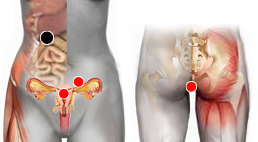

Micelio intestinalis
Par
píloro - ano, ureter, útero

Nota: Puede ser Píloro - ano y ureter (probar si es izquierdo o derecho) y útero.
Generalidades:
Altamente patógeno y explosivo. Micosis intestinal, diarrea acuosa, insuficiencia ventilatoria aguda. Checar par gluteo.
El término Micelio no se refierre a una especie de hongo particular, sino a una estructura vegetativa del mismo que crece muy rápidamente formando filamentos alargados (hifas). Por la rapidez con que crece (más de 1mm por hora) es que en poco tiempo puede ser altamente patógeno.
Transmisión
Según el tipo de hongo de que se trate. Puede ser captado del ambiente, por secreciones corporales de otras personas, por contacto sexual.